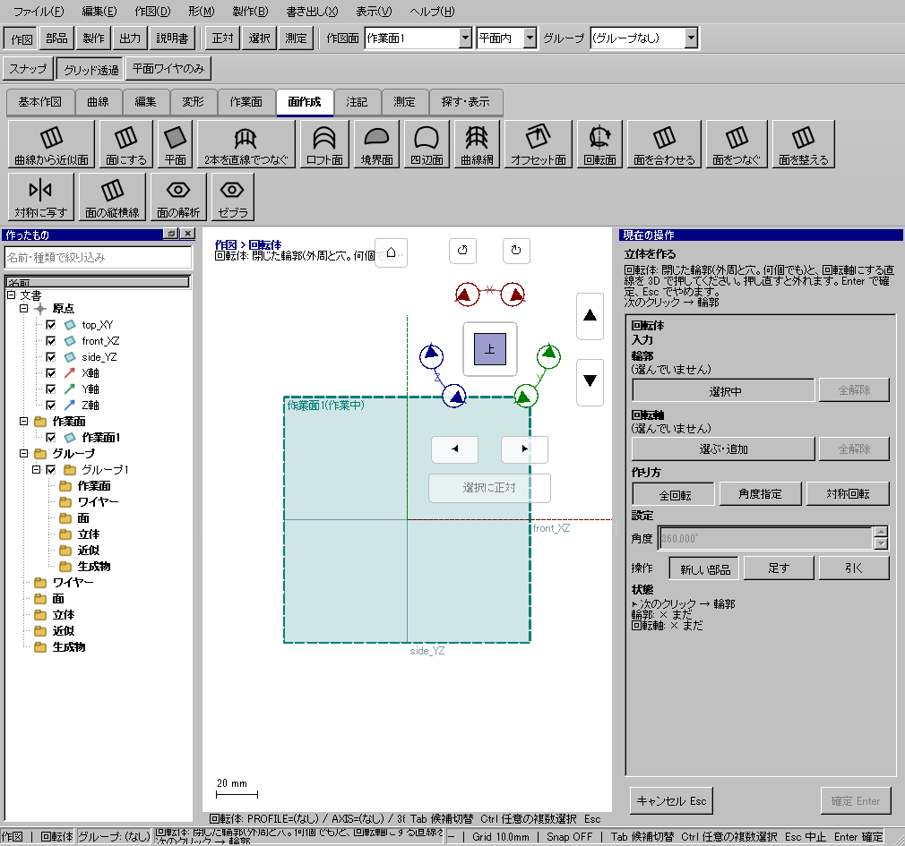
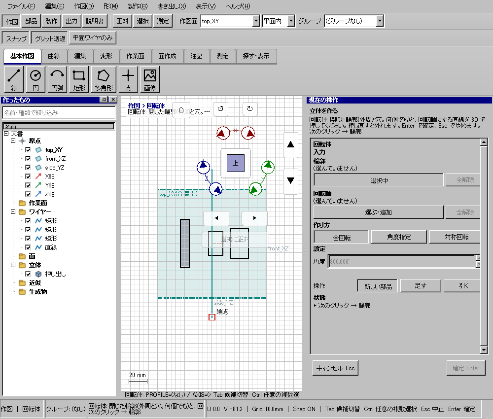
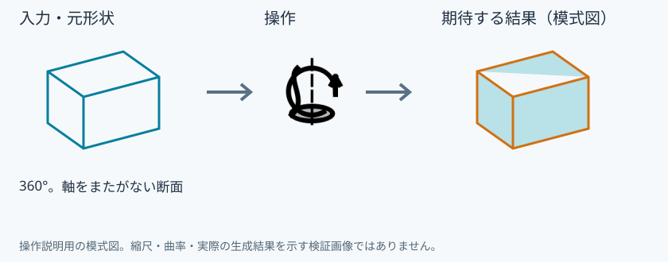

内半径5・外半径7・高さ10mmの筒を作る
使う機能：回転体(立体)
断面を軸の周りへ回して体積を作ります。例の矩形は軸から5〜7mmなので、中心に穴のある筒です。
内半径5mm・外半径7mm・高さ10mmの筒になる。
1 準備 — 元の図形から作る
front_XZ上に面内u/v=(0,5)〜(10,7)の矩形と、(-5,0)→(15,0)の軸を作る。
まだ用意できていなければ、次の手順を先に行ってください。既にモデルがある場合も、例の座標・大きさ・面の向きを自分のモデルへ読み替えます。
- 指定座標の直線・円・円弧を準備する — 図形の作成から順に練習できます。
- 線・面・部品を取り違えずに選ぶ — 図形の作成から順に練習できます。
練習前にKCD2を別名保存します。数値の長さはmm、角度は度です。平面内のu/vと世界XYZを区別します。
2 使う道具を開く — 押す場所
- 部品 → 作成 → 回転体
別の入口：Ctrl+K → 回転体(立体)を検索 → 候補の用途を確認して開きます。別モードなら「全モードから探す」をオンにします。


この実画面は既存操作試験の一場面で、下の数値例の完成画像とは限りません。
3 操作手順 — 一つずつ進める
断面を作る
作図面をfront_XZにし正対します。面内u/vで0,5と10,7の矩形を作ります。
画面で確認：世界X=5〜7、Z=0〜10の細長い矩形です。
軸を別に作る
同じ作業面で面内u/v=-5,0から15,0への直線を作り「軸」と名付けます。
画面で確認：軸は矩形の外側を通ります。矩形が軸をまたぎません。
回転体を開く
部品→作成→回転体を押します。「回転面」は厚みのない面なので入口を区別します。
画面で確認：右ペインに断面・軸・回転角が出ます。
断面と軸を登録する
断面の選択ボタンから矩形全体を、軸の選択ボタンから縦線をそれぞれ追加します。
画面で確認：矩形の1辺だけを断面にしないよう、入力名と強調範囲を照合します。
角度を指定する
角度を360度、結果を新規にします。円周の一部分なら角度を小さくして下見します。
画面で確認：全周の筒になる下見です。軸の方向による回転側の違いも見ます。
確定して調べる
確定後に元図を一時非表示にし、上から見て中央の穴を確認します。保存とUndoも試します。
画面で確認：内半径5mm・外半径7mm・高さ10mmの筒です。断面が軸へ届かないので中空が正しい結果です。
4 設定する欄と数値
ボタン名・欄名と、今回使う値を対応させてください。項目が出ていない場合は作り方・モードが合っているか確認し、ペイン内をスクロールします。
| 見る欄・役割 | この例の設定と意味 |
|---|---|
| 断面 | front_XZのu0〜10・v5〜7 |
| 軸 | v0の横線 |
| 角度 | 360° |
| 結果 | 新規 |
選択の確認：役割欄の名前と3Dの強調を照合します。重なって拾いにくい時はTabで候補を替えます。全体を使う例では左一覧の要素名を選び、3Dの1辺選択と区別します。

5 確定して結果を確認
必要な入力と数値をそろえ、下見と状態欄を確認して、右ペインの作成・適用・確定ボタンを押します。Enter対応の道具はEnterでも確定できます。
内半径5mm・外半径7mm・高さ10mmの筒になる。
形を作る操作では、元と結果の名前を分けて一覧で確認し、必要に応じて元を一時非表示にします。表示だけの機能では形状や要素数を変えることが目的ではありません。
6 取消・やり直し・保存
Escで未確定の入力を取り消します。道具を終えるには選択（V）か別の道具へ切り替えます。確定済みの図面変更はCtrl+Z、やり直しはCtrl+Yです。
モデルの編集正本はKCD2、説明書の編集正本はKCIです。外部へ出力するだけの機能では、出力ファイルと編集元を両方残してください。
進めない場合 — 症状から戻る場所を探す
| 起きていること | 確認して直す場所 |
|---|---|
| 中心が埋まると思った | 断面は軸まで届いていないため中空が正しい |
| 自己交差 | 断面を軸の片側へ置く |
この機能の入力条件：閉じた輪郭を1つ以上と、回転軸にする直線を選んでください。
計算中は処理表示を見ます。失敗が出たら、対象・入力条件を変えずに何度も押すのでなく、案内にある対象と条件を確認します。
参考画面の出典と確認範囲
試験名：HP-SO-04 回転体は軸が輪郭を横切れば断り足すでは相手を押して確定で相手が隠れ1回で戻る。試験全体の結果：passed。画像はコマンド呼出し直後で、入力待ち・下見の場合もあります。各段階の完成証拠ではありません。